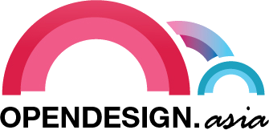
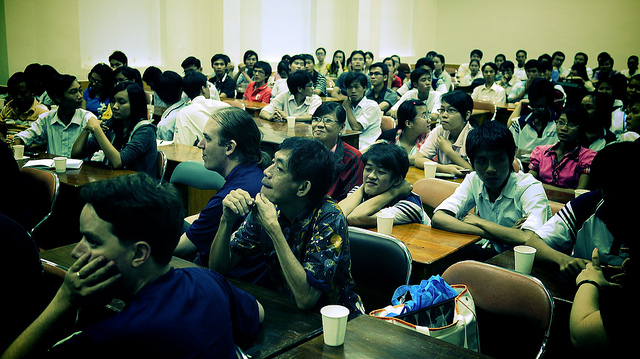

Blog
Join us at Hackerspace.sg
Vietnam has one of the fastest growing online population in the region, probably globally too. Vietnam is also seeing growth in IT companies exploring the local market and setting up offshoring centers.
Vietnam-based entrepreneurs and FOSSASIA event organizers Dang Hong Phuc and Mario Behling are visiting Singapore and will be talking about the startup and tech scene in VN and what opportunities there might be for collaboration (tech events, open source, women in IT etc.).
Open Design Weeks in April in Saigon
The Open Design Weeks Asia take place in Hochi Minh City and Cantho (Vietnam) from April 2-16, 2011. The program has been announced. There will be an Open Design Camp in Saigon and intensive workshops in Cantho.

The focus of the Open Design Weeks are on design, Free, Libre and Open Source software, open content and Free Culture practices. Events during the design weeks include workshops, design camps to share expertise an unconference, company meet ups to establish international cooperations, presentations in Universities and training workshops. The intensive workshops with local designers, software developers and typographers focus on collaborative font design, mapping and publication.
This will be a great chance to get involved in some new and exciting projects
Open Design Weeks: http://opendesign.asia
Read more »
FOSSASIA 2010: Bridge to Asia

FOSSASIA 2010 took place at the Raffles College campus in Ho Chi Minh City (Saigon), Vietnam from November 12th to 14th. This inaugural event brought together over 350 international and local developers and users in 62 presentations and panels. An amazing crowd of 90 enthusiastic volunteers supported participants. FOSSASIA attendees came from 30 countries including Cambodia, Singapore, Indonesia, Japan, India, Taiwan, Malaysia, Germany, France, England, Australia, and the US.
The goal of FOSSASIA is to provide knowledge of free and open source software and to offer the community a place to meet and share ideas. The annual conference brings together members of the Asian FOSS community along with the international community, thus fostering cooperation across projects and across borders.
Special Tracks: Women in IT and Lightweight Computing
The 2010 event offered 5 tracks including the two special theme tracks "Women in IT" and "Lightweight Computing".
Hong Phuc Dang from MBM Vietnam said of the Women in IT panel:
"It is fascinating to see so many girls participating. I am very happy that we have chosen 'Women in IT' as a theme as it attracted many students to join us."
Other participants of the women panel were Lilly Nguyen (UCLA, US), Van Thi Bich Ty (PCWorld, Vietnam), Mary Agnes James (Seacem), Lita Cheng (Community Cambodia) and Kounila Keo (ICT4D Cambodia).
The heated debate during the panel definitely portrayed some of the issues and challenges young female developers face. I hope that it made many of the younger women more interested in participating in the community. I am excited to see more involvement of women in IT in Asia in the near future" said Lilly Nguyen from the US.

The "Lightweight Computing" track also generated a lot of interest. Lubuntu, the lightweight version of Ubuntu, attracted the attention of local developers. Additionally, mobile solutions such as Android and Xpad/Xpud were covered in several presentations by Ping-Hsun Chen (Taiwan), Pham Huu Ngon (Vietnam) and Tan Quang Sang (Vietnam).

OpenOffice.org Asia Meet Up
FOSSASIA was particularly happy to welcome the OpenOffice.org community who sponsored the event. As head of the Vietnamese OOo localization team, Vu Do Quynh from Hanoilug presented on the various ways that people could contribute to the OOo community while Yutaka Niibe and Yukiharu Yabuki presented on OOo's use by the Japenese government in the Osaka Prefecture.
Mini-Debconf, Fedora Release Party and Mozilla
FOSSASIA 2010 was also an opportunity for the Debian community to organize a Mini-Debconf. Debian developers present included among others Jonas Smedegaard (Denmark), Paul Wise (Australia) and Thomas Goirand (France/China).

To celebrate the release of Fedora 14, Ambassador Anh Tuan Truong (Vietnam) and Pierros Papadeas (Greece) hosted the world's largest release party. The even took place at the Ho Chi Minh City University of Pedagogy. Pierros--an active Mozilla contributor---had this to say about the release event:
"It was AWESOME. At first I thought most of them were there due to their teachers, but when we started a Q&A session I realized I was so wrong… they were asking about PAE kernels, broadcom drivers, dual boot and LVM etc! By the end of the party we gave out T-shirts, LiveCDs and stickers to everyone, all 134 people where there! I believe that sets a new fedora record! The local Vietnamese community was introduced and many people are already starting to send emails wanting to start translating."

The FOSS Bridge to Asia
Projects also used the event as an opportunity to showcase new tools and devices like the Freedombox project of the Freifunk community and the latest version of the Crypto-Stick. Jan Suhr (Germany/Singapore) showed the device as a combination of both open hardware and open software.
In the web track, Colin Charles (Malaysia) presented the newest improvements of MariaDB. In addition, Michael Howden (New Zealand) conducted a workshop for Sahan Eden, a platform to provide support in the case of disasters. The workshop gave students a chance understand the information needs of disaster scenarios and they were able to contribute to the localization of the software.
Several web content management systems set-up information booths at the event. These included: TYPO3 with a booth organized by Dominik Stankowski from Web Essentials Cambodia and Drupal (Virak Hor, Cambodia and Quang Thong Tran, Vietnam). The event also introduced other tools such as Zabbix, a monitoring software (Walter Heck, Netherlands). One more hot topic was the enterprise p2p search engine YaCy.net of Michael Christen (Germany). A number of more established projects had the opportunity to share their news at the event including the desktop environments KDE with a presentation about Qt (Gregory Schlomoff, France), GNOME (Kien Truc Le, Vietnam), and LXDE (Duy Hung Tran, Vietnam).

Unconference
Taking a cue from previous barcamps and 'unconferences,' many attendees presented lightning talks. Preetam Rai, an Android App inventor, shared photos and tales about other barcamps throughout Southeast Asia. Mary Agnes James from Seacem spoke about todays chances to connect and share with e-media and social networks. Seacem also graciously sponsored this event.
Libre Graphics and Open Design
During the final day of the event, FOSSASIA held it's first Libre Graphics Day. Arne Goetje (Germany/Taiwan) introduced his new approach for a pan-Asian fonts library. Jon Philips (US) from Status.net and Dave Crossland (UK) from the Google Fonts project conducted an Open Design Workshop. The workshops brought curious crowds and has ultimately seeded plans for the Open Design Weeks 2011.

See you in Vietnam
Thanks again to the amazing crowd at FOSSASIA - developers, translators, event organizers, bloggers, teachers, students, designers and lost but not least our enthusiastic volunteers! See you all in 2011!
* FOSSASIA 2011 will take place in Ho Chi Minh City (Saigon) on November 11-12
* The Open Design Weeks 2011 will be celebrated from April 2-15 in Ho Chi Minh City and Can Tho in the Mekong Delta.

Links:
* FOSSASIA http://fossasia.org
* Open Design Weeks Asia, http://opendesign.asia
FOSSASIA 2010 press coverage
Our FOSSASIA event 2010 was covered in quite a few online media.
Press Articles
- http://www.laodong.com.vn/Tin-Tuc/35-dien-gia-du-Hoi-nghi-phan-mem-ma-ng...
- http://vovnews.vn/Home/Ngay-1211-se-dien-ra-Hoi-nghi-FOSSASIA-nam-2010/2...
- http://www.vietnamplus.vn/Home/Sap-dien-ra-Hoi-nghi-FOSSASIA-nam-2010-ta...
- http://thethaovanhoa.vn/350N20101110003346856T0/sap-dien-ra-hoi-nghi-fos...
- http://www.khoahocphothong.com.vn/news/detail/6626/hoi-nghi-cong-nghe-ph...
- http://e-info.com.vn/vn/index.php?option=com_content&task=view&id=43558&...
- http://www.baoangiang.com.vn/newsdetails.aspx?newsid=25553
- http://www.thongtindoingoai.vn/c1006n20101110083153890/sap-dien-ra-hoi-n...
- http://mic.gov.vn/tintucsukien/tintonghop/Trang/S%E1%BA%AFpdi%E1%BB%85nr...
- http://www.baomoi.com/Info/1211-Khai-mac-Hoi-nghi-FOSSASIA-2010/76/51732...
- http://webtinhoc.vn/home/showthread.php?t=39953
- http://news.ndthuan.com/viet-nam/ngay-1211-se-dien-ra-hoi-nghi-fossasia-...